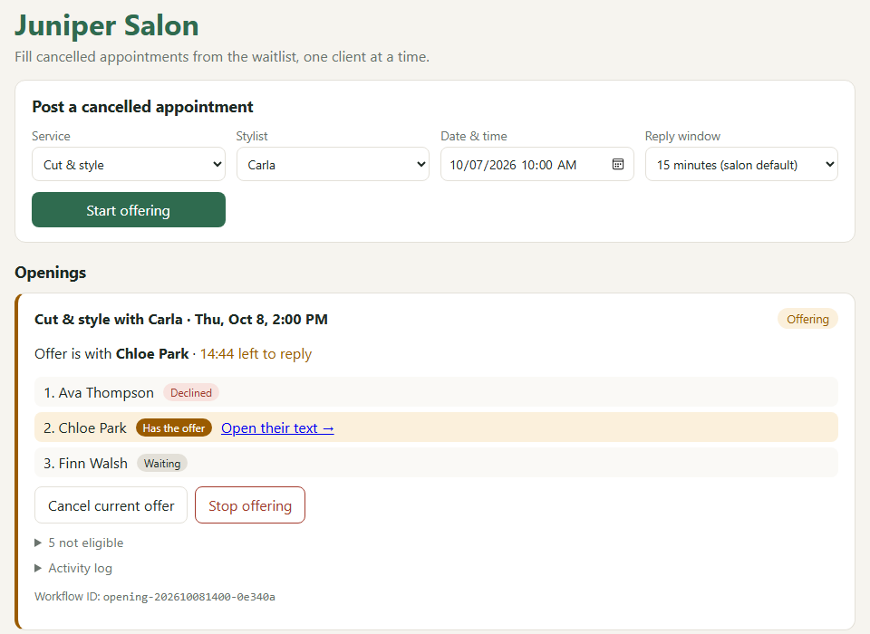
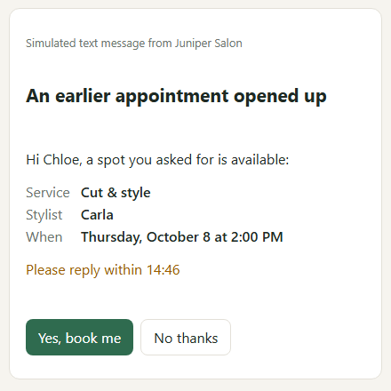
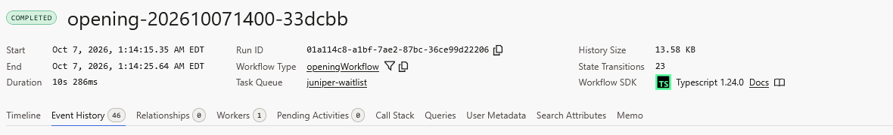
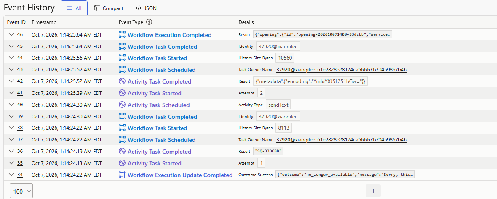

Juniper Salon · Prepared for Lena
Today: a cancellation shows up in Square → you or Carla check the Google Sheet → text matching clients from the salon phone → track replies by memory.
What the prototype does


How it handles things going wrong
It waits for each reply and moves on by itself after 15 minutes.
Only one client can get the slot. A late "yes" is told it's no longer available.
Every offer is recorded. If the computer restarts mid-offer, it picks up where it left off, and failed texts are retried.


Being clear about the prototype
Working now
Simulated
Not included yet
Practical next step
If it works: connect Square so a cancellation starts the offers automatically, then roll out to every stylist.